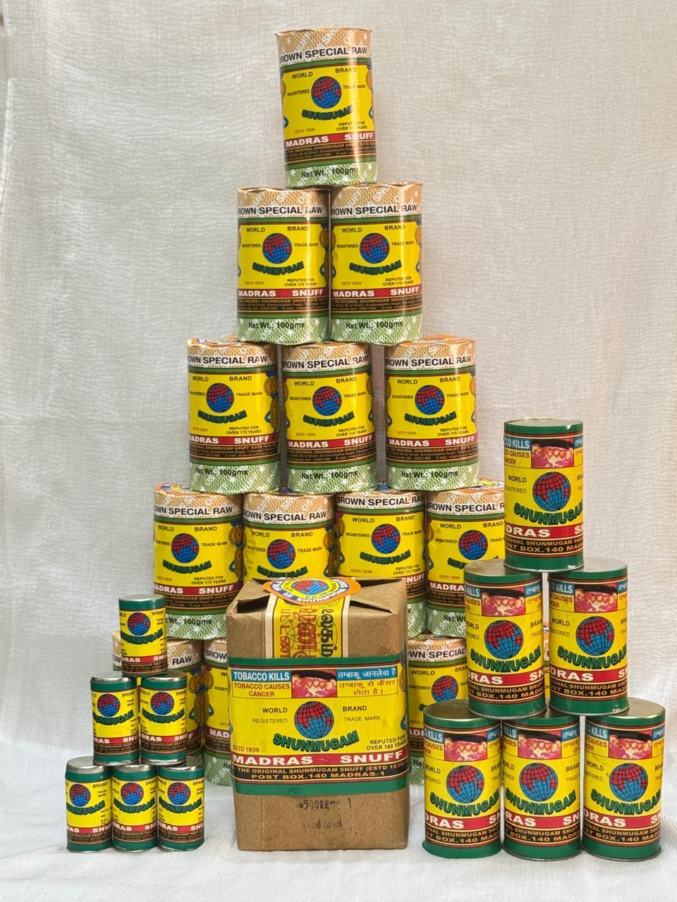
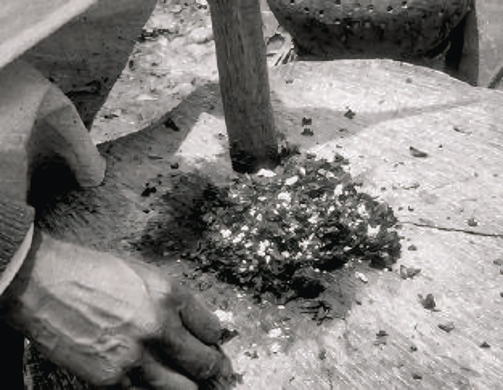
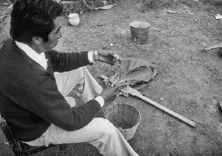
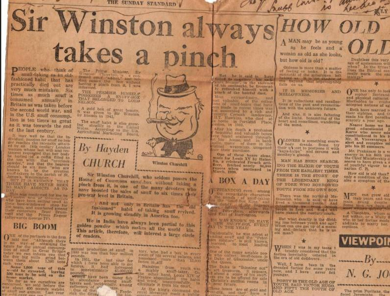

With a legacy spanning over 185 years, Original Shunmugam Snuff & Co. stands proudly as one of India’s oldest and pioneering snuff manufacturers. Established in 1839 by our forefathers, the company has grown generation after generation, preserving age-old craftsmanship while embracing modern standards of quality.
View Products
Tobacco is a natural plant grown for its leaves, which are carefully harvested, cured, and processed for consumption. Known for its rich aroma and distinctive character, tobacco has been used for centuries across cultures in various forms—both smoked and smokeless. At the heart of tobacco is nicotine, a naturally occurring compound that contributes to its unique sensory experience.
The use of tobacco dates back thousands of years, originally rooted in the indigenous cultures of the Americas for medicinal and ceremonial purposes. It was introduced to the rest of the world in the late 15th century and reached the shores of India in the early 16th century. Since then, India has become one of the global pioneers in cultivating premium tobacco, blending ancient traditions with refined processing techniques.
While tobacco is commonly associated with smoking, its most traditional and refined form is Smokeless Tobacco, specifically Snuff (Podi). Smoking Tobacco includes cigars, cigarettes, and pipe tobacco. Traditional Snuff is the most artistic form of tobacco. It involves roasting high-quality leaves and grinding them into a fine, aromatic powder. This method preserves the natural oils of the leaf without the need for combustion.


Crafted with precision and care, our snuff tobacco begins with the selection of high-quality tobacco leaves chosen for their richness, character, and aromatic depth. Each leaf undergoes a meticulous curing and aging process to develop its distinct profile before being finely milled into a smooth, consistent blend.
Designed for a refined smokeless experience, our snuff stands out for its balanced texture, deep aroma, and clean finish. Every batch is carefully blended to ensure uniformity while preserving the natural essence of the tobacco. Subtle flavor notes and expertly developed profiles offer a sensory experience that is both traditional and contemporary.
Rooted in heritage yet crafted for modern preferences, our snuff tobacco reflects a commitment to quality, craftsmanship, and detail. It is created for those who value authenticity, appreciate fine blends, and seek a distinctive alternative to conventional tobacco use.

Submit the following details, we will get back to you soon